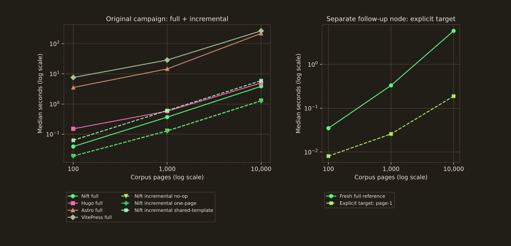
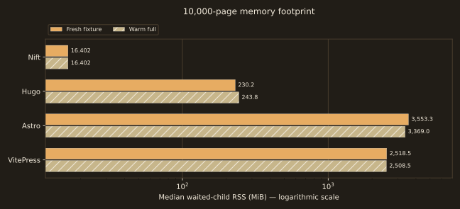

Experiment 02 / build architecture
From source files
to 10,000 pages.
A controlled throughput experiment in four build systems. Minimal content, tool-native sources, checked routes and explicit full/incremental boundaries.
Zero-origin 0–300s lanes · medians · shared dependencies/cache prepared. Minimal-page throughput, not a real-site ranking. State and fairness boundaries ↓
Nift-only production iteration; no competitor incremental/HMR comparison. Byte equality with full recomputation is checked.
100 → 1,000 → 10,000 title/heading/body pages.
Fresh application state or warm full build; one CPU.
Exact routes, titles, headings and body content.
10,000-page corpus
Time and memory, with boundaries attached.
At 10,000 pages, Nift’s fresh-fixture full-build median was 3.853 s and Hugo’s was 5.005 s. Astro and VitePress were 217.8 s and 264.5 s. These are observations for minimal pages, with each system’s build machinery included.
| Generator | Fresh s | Warm full s | Fresh RSS MiB | Warm RSS MiB |
|---|---|---|---|---|
| Nift | 3.853 | 6.516 | 16.402 | 16.402 |
| Hugo | 5.005 | 6.455 | 230.2 | 243.8 |
| Astro | 217.8 | 216.3 | 3,553.3 | 3,369.0 |
| VitePress | 264.5 | 256.9 | 2,518.5 | 2,508.5 |



The cost of more pages
| Pages | Nift | Hugo | Astro | VitePress |
|---|---|---|---|---|
| 100 | 0.039 | 0.151 | 3.531 | 7.577 |
| 1,000 | 0.368 | 0.579 | 14.552 | 28.618 |
| 10,000 | 3.853 | 5.005 | 217.8 | 264.5 |
Three measured points, not a fitted complexity model. Fixture/dependency preparation is outside timing; generated output is produced inside it.



| Pages | No-op s | One changed page s | Shared template s |
|---|---|---|---|
| 100 | 0.019 | 0.019 | 0.063 |
| 1,000 | 0.129 | 0.126 | 0.608 |
| 10,000 | 1.288 | 1.255 | 5.906 |
| Pages | Fresh full reference s | Explicit page-1 target s |
|---|---|---|
| 100 | 0.035 | 0.008 |
| 1,000 | 0.331 | 0.026 |
| 10,000 | 5.820 | 0.188 |
Explicit target means nift build page-1 after changing that one leaf in an already fully built corpus. It does not scan/build all changed pages or rebuild a shared-template change. Every sample validates the complete corpus, unchanged unrelated pages, and byte equality with a full rebuild. The separate node uses the same Linode plan and pinned Nift version, with an AMD EPYC 7542 CPU versus the original EPYC 7601; its CPU and tool hashes are recorded in supplemental raw evidence, and its verified teardown record is retained. Cross-node ratios are not claimed.
Nift’s development loop
| Change | Median s | Min–max s | RSS MiB |
|---|---|---|---|
| no-op | 1.288 | 1.211–1.919 | 10.527 |
| one-page | 1.255 | 1.197–1.306 | 11.648 |
| shared-template | 5.906 | 5.709–6.723 | 17.523 |
One independent leaf or the shared template is changed before each run. Every resulting output set must match a full rebuild of that same mutated input byte-for-byte.
Iteration memory / peak RSS
Incremental memory matters alongside elapsed time: a smaller affected build can leave more headroom for concurrent builds, CI jobs and agents on constrained machines. Shared changes and retained worker pools can still use substantial memory; an incremental build is not guaranteed to have a lower peak than a full build. Actual concurrency and total workflow productivity were not benchmarked.
Kernel waited-child high-water RSS; not aggregate simultaneous process-tree RSS. Five original measured samples per cell: median [min–max]. Targeted follow-up is a separate EPYC 7542 node; original is EPYC 7601. No cross-node ratio or competitor incremental/HMR comparison.
| Case | Original node / Nift |
|---|---|
| 100 pages / no-op | 5.55.5–5.8 |
| 100 pages / one-page | 6.86.8–6.9 |
| 100 pages / shared-template | 6.86.8–6.9 |
| 1,000 pages / no-op | 5.85.7–5.8 |
| 1,000 pages / one-page | 6.96.8–6.9 |
| 1,000 pages / shared-template | 7.57.4–7.5 |
| 10,000 pages / no-op | 10.510.4–10.5 |
| 10,000 pages / one-page | 11.611.5–11.7 |
| 10,000 pages / shared-template | 17.517.4–17.5 |
| Case | Follow-up node / Nift |
|---|---|
| 100 pages / explicit target | 6.86.8–6.8 |
| 1,000 pages / explicit target | 6.96.8–6.9 |
| 10,000 pages / explicit target | 11.511.4–11.5 |
Different scopes and hosts remain separate; full-build memory is not substituted for an edit. Raw measurements, provenance and memory scopes ↗
Equivalence before speed
The output has to contain the page.
Every build checks the complete corpus route set and each page’s exact title/heading and expected body. Hugo raw HTML is enabled; Astro uses file routes; VitePress has a minimal custom theme, retains hydration assets and generates one extra validated 404 page.
Fresh-fixture builds (raw mode application-cold) recreate the entire project fixture; shared pinned node_modules/toolchains and their generated dependency cache remain prepared across the series. Astro/Vite’s shared node_modules/.vite cache is inventoried. This does not measure a complete reset of all application caches. Warm full removes generated output/cache directories while retaining other application build state. Both are full builds; neither is a machine-cold boot. Nift uses one build thread; Hugo GOMAXPROCS=1; process affinity is one logical CPU.
One warmup plus five measured samples per cell, rotating tool order. C-supervised fork/exec-to-exit latency excludes Python/supervisor launch. Kernel waited-child RSS is a high-water metric, not simultaneous aggregate tree memory; concurrent children/shared pages require a separate accounting boundary.
| Generator | Removed before warm full | Retained state |
|---|---|---|
| Nift | public/ | .nift/ tracking metadata |
| Hugo | public/, resources/ | other project state |
| Astro | dist/, .astro/ | shared node_modules dependency cache |
| VitePress | docs/.vitepress/dist/, docs/.vitepress/cache/ | shared node_modules dependency cache |
Observation → interpretation
A small build surface is useful evidence.
Different preparation, rendering, bundling and hydration paths appear in these costs, while their features are mostly unused by minimal pages. Nift also has a broader scripting/build role than a conventional SSG. The fixture does not exercise complex Markdown/MDX, assets, component graphs or maintained production websites.
Warm full names the retained-state workflow, not an expected speedup. Different totals do not identify individual planning/rendering/cache phases; those were not profiled. Scaling describes this fixture. Competitor incremental server/HMR behaviour was not measured; comparing it to Nift’s one-shot dependency build requires a new equivalent experiment.
Frozen environment
One node. One logical CPU.
g6-standard-4, shared CPU; all measured processes pinned to CPU 0.
Virtual scheduling and neighbouring tenants may affect latency.
Kernel 6.8.0-134-generic; Python 3.12.3.
Tool/fixture preparation was outside timing. OS caches were uncontrolled. State-reset scope is suite-specific; no machine-cold boot is claimed. Suite revision: 4947b42c863782ba6be0fdbbd2003d60d6d0d3d4. Raw evidence records CPU/RAM inventory, binary hashes and exact commands. Provisioning and verified teardown record. System startup-file hashes and distro package versions support reproduction. Superseded series archive and evidence notes retain the earlier PTY method, website pins and scripting corpus; these are excluded from the official summaries.
Versions
Tested systems
| System | Measured version |
|---|---|
| Nift | Nift v4.7.2 |
| Hugo | hugo v0.167.0-3fff6fb5c267dacb26280c78dbe8c344054249c8 linux/amd64 BuildDate=2026-09-28T14:50:38Z VendorInfo=gohugoio |
| Node.js | v24.21.0 |
| Astro | 7.3.6 |
| VitePress | 1.6.4 |
Reproduce / scrutinise
Every sample is retained.
website-100.json · website-1000.json · website-10000.json · targeted-builds.json
Independent clean-checkout reproduction: validated raw run.
Suite, audit and provisioning instructions ↗. Check out the exact measured suite revision and acquire its pinned tools. scripts/summarize.py regenerates summaries from one validated run; historical machines and revisions are never merged.
python3 scripts/campaign.py --nift /opt/campaign/tools/bin/nift --hugo /opt/campaign/tools/bin/hugo --node-project . --pages 10000 --samples 5 --warmups 1 --timeout 1200 --output evidence/run.json
Warmups are retained separately. Correctness failures/timeouts stop publication. Corrected observations are all retained; superseded method, tool-pin and workload series are archived as diagnostics with reasons for exclusion. Percentiles use linear interpolation and describe this sample distribution; they are not confidence intervals.
Conclusion
Defensible as minimal-page throughput.
The corrected fixture and output gates support this bounded experiment. Its measurement boundaries should travel with every quoted number; read real-site migration reports for architecture and maintenance tradeoffs.
Nift Benchmarks